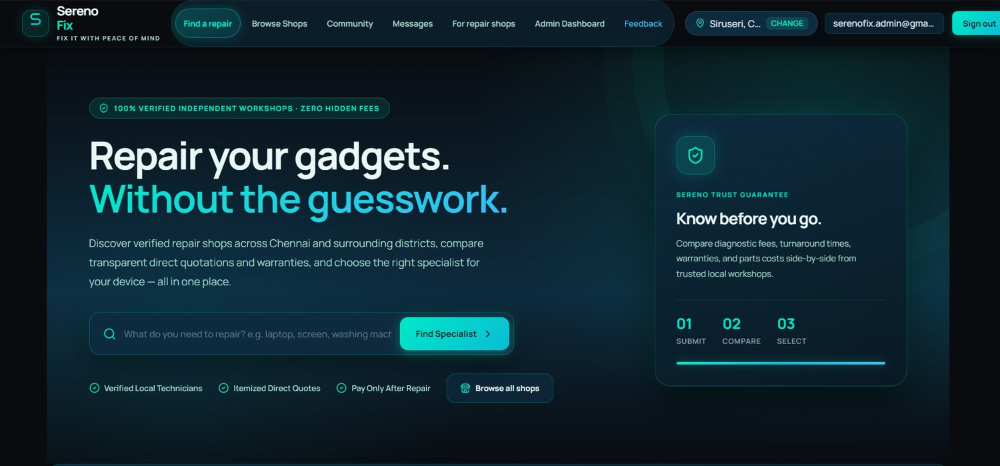
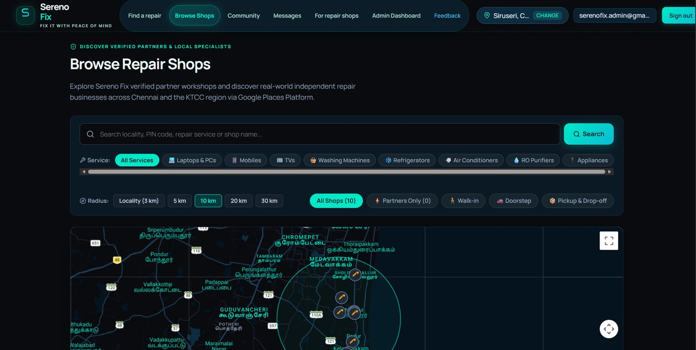
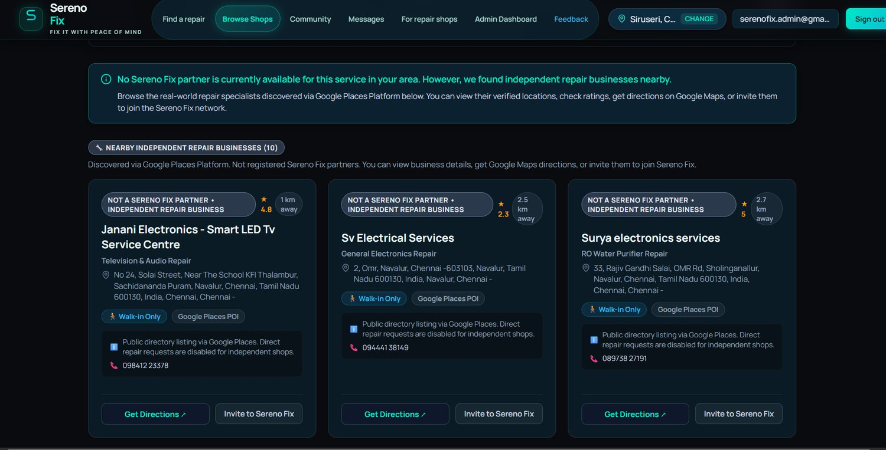
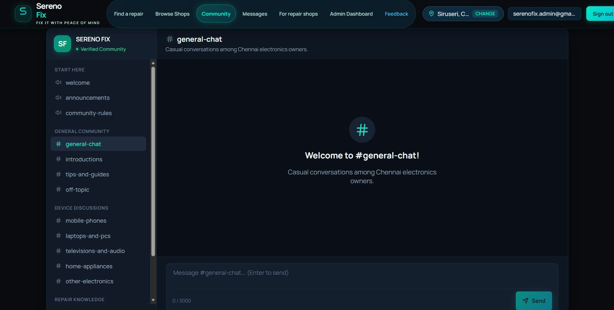
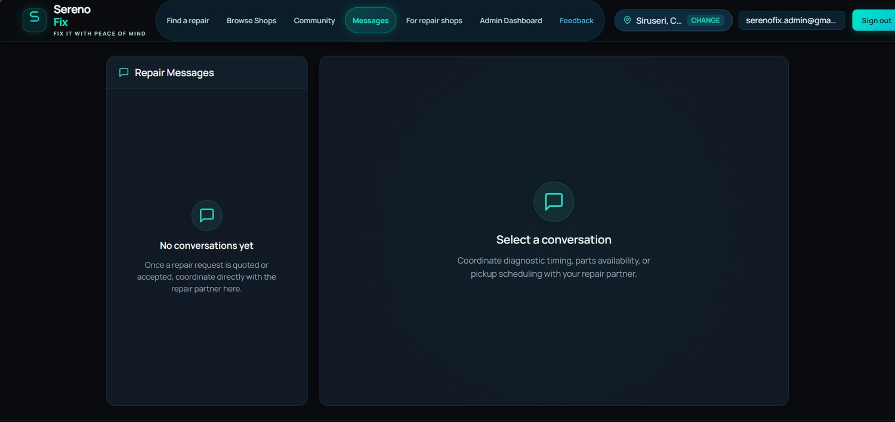
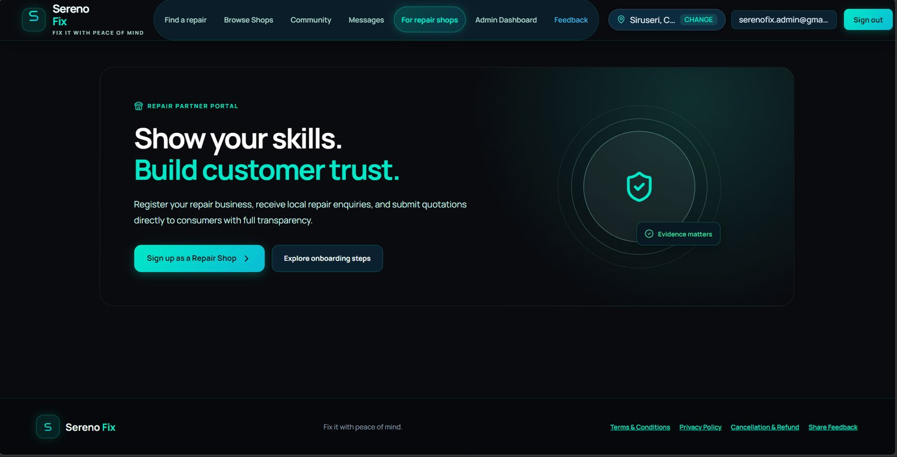
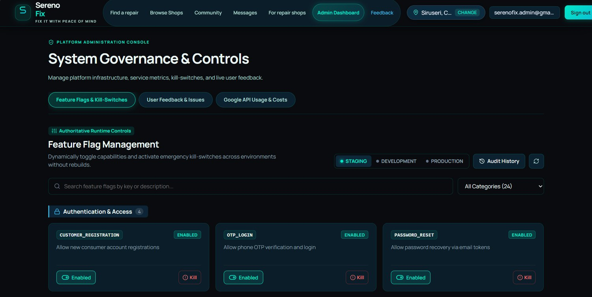
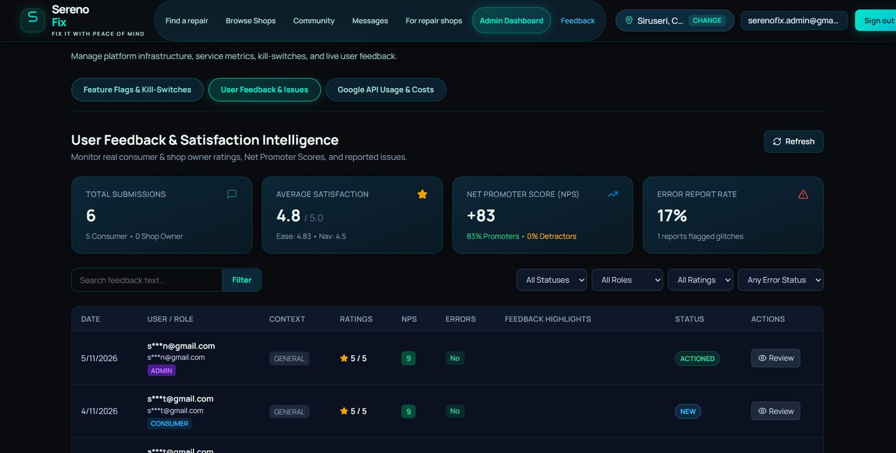
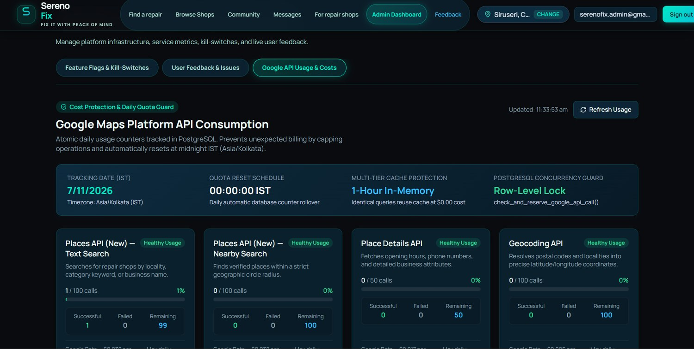

Site Reliability Engineer with 2+ years supporting enterprise applications on Microsoft Azure and AKS, focused on incident response, observability, service restoration and reliable releases.
I work on the reliability and operational side of enterprise applications, with hands-on experience across Azure, AKS, Kubernetes, monitoring and production troubleshooting.
Day to day production monitoring, incident response and resolution, service restoration, root cause analysis, release validation and SLA-driven operations.
I regularly work alongside application, infrastructure, database and support teams to troubleshoot issues and get services back up quickly.
Supporting enterprise applications in Azure and Azure Kubernetes Service, focused on production reliability, observability, incident response and service restoration.
Monitor enterprise production applications using Dynatrace, Splunk, Azure Application Insights and AKS; drive incidents from detection through resolution.
Resolved 100+ P2/P3 production incidents through log analysis and root cause analysis, consistently meeting a 99% SLA target.
Diagnose performance bottlenecks and service degradation by correlating telemetry, metrics, logs and dashboards across distributed application components.
Coordinate incident management in ServiceNow, including triage, service restoration, stakeholder communication, SLA tracking and post-incident reviews.
Support AKS workloads through pod health checks, Azure Log Stream analysis, deployment verification and container troubleshooting.
Validate production releases using smoke tests and REST API checks with Postman and Swagger/OpenAPI; handle change requests and post-change health checks.
Automated an internal email workflow with Microsoft Power Automate, saving 10+ hours of manual effort per week.
Author operational runbooks and knowledge-base articles, and manage certificate renewals across Azure environments.
A location-aware repair-services marketplace designed to help customers discover relevant repair shops, connect with service providers and manage repair enquiries. Built as a hands-on product engineering project with a strong focus on backend security, operational boundaries and containerised delivery.
In active development
Sereno Fix · Marketplace interfaceSereno Fix is designed around a common customer problem: finding a suitable repair shop based on location and repair category, then moving from discovery into an enquiry and follow-up workflow. The platform separates customer, shop and administrative capabilities, with policy checks on sensitive operations.
Location-aware browsing, service categories, map-based discovery and matching logic.
Backend workflows for customer enquiries, shop responses and quotation-related operations.
Phone OTP challenge flow, password hashing, server-side sessions and role checks.
Community, moderation and messaging modules with lifecycle and policy services.
The React client communicates with an Express API. The API applies middleware and route-level policies, delegates business operations to services, and accesses PostgreSQL through a shared connection pool.
Express route modules expose API endpoints for authentication, locations, shops, enquiries, administration, community, messages and feedback.
Business logic is separated into modules for OTP, users, matching, quotations, notifications, geocoding, postal lookup, moderation and audit operations.
Centralised session configuration, authentication, CSRF checks, shop ownership enforcement, environment validation and security headers.
Versioned SQL migrations (001–016) evolve identity, marketplace, privacy, fulfilment, feedback, feature flags and Google API usage tracking.
SMS delivery is abstracted behind a service adapter. Development uses a mock delivery path; production Fast2SMS delivery requires the appropriate provider credentials and India DLT/sender/template approvals. Do not treat live SMS delivery as enabled.
Separate API and web images, with a multi-stage backend image and non-root runtime user.
Web, API and PostgreSQL services, service dependencies, health checks and persistent database volume.
Serves the frontend, supports SPA fallback and reverse-proxies API requests to the backend.
Workflow includes backend test execution, frontend build, Docker image build and Compose configuration validation.








The repository contains the application modules, database migrations, automated tests, Docker configuration and CI workflow described above. Feature completeness, third-party production credentials, live provider delivery and public deployment are separate release concerns and are not claimed here as completed production capabilities.
A hands-on full-stack build to get practical reps across application development, containerization, CI/CD and Kubernetes-based deployment.
The application uses Node.js, Express.js and MongoDB with REST APIs documented through Swagger/OpenAPI. Docker and Docker Compose handle containerization, while GitHub Actions and Argo CD provide CI/CD and GitOps-based Kubernetes deployment.
Modular backend with API validation via Postman and Swagger/OpenAPI.
Docker and Docker Compose with custom networking and persistent storage.
Deployments, Services, configuration and application health validation.
Pods, Services, EndpointSlices, connectivity and port-forwarding.
Agni College of Technology, Chennai
8.73 CGPAAnthropic
Certified · September 2026Open to SRE, DevOps, cloud infrastructure and platform engineering opportunities.